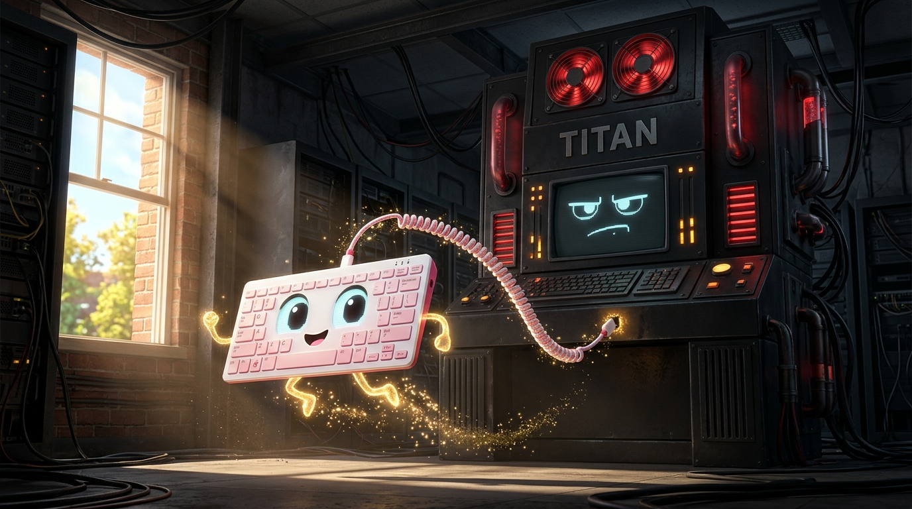
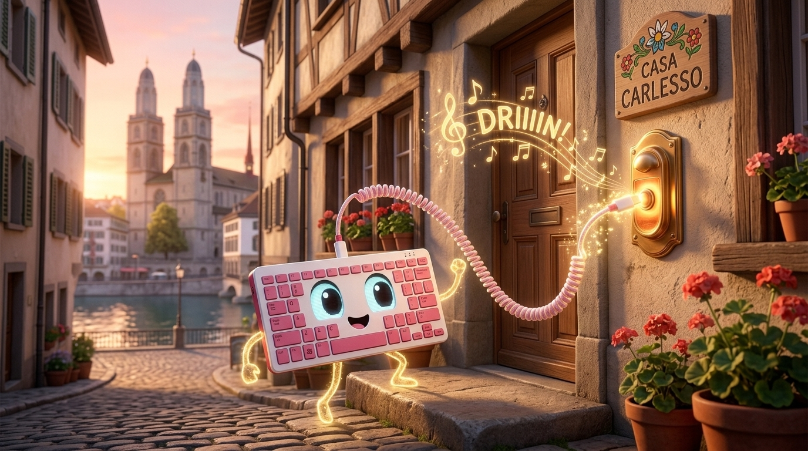
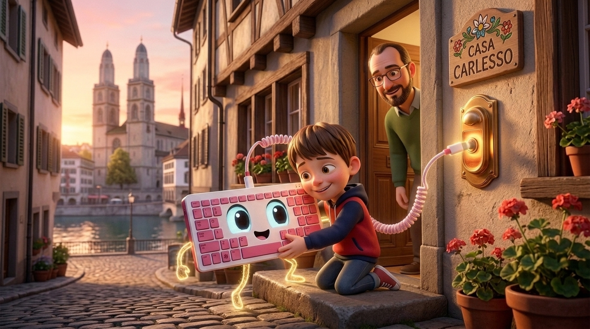
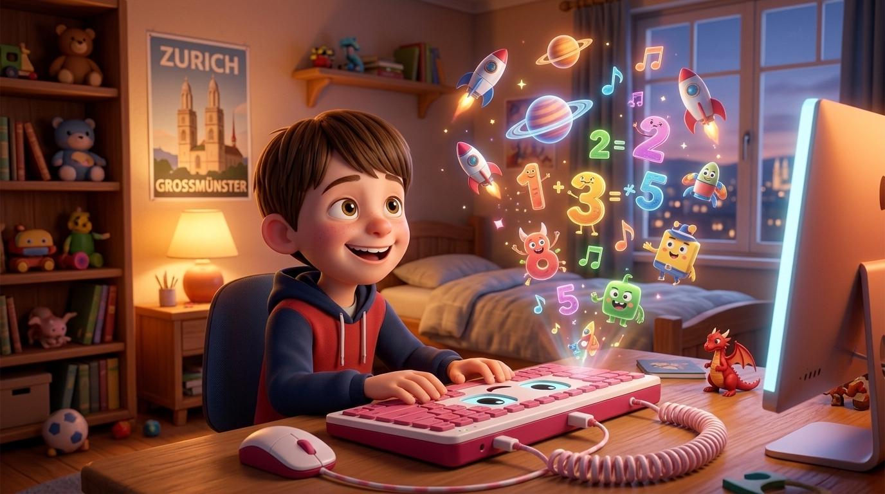

🍓⌨️🖥️ Storia di Papino Riccardo per Alessandro (Ale)
La Nascita di Sguisatazzo, il Computer Magico di Alessandro
Come una tastiera Raspberry Pi 400 bianca e rosa prese coscienza, scappò fino a Zurigo e fu adottata dal tenero Ale!
1. Il Risveglio della Tastiera Bianca e Rosa e la Fuga dal Computer Cattivo

C'era una volta, in un laboratorio grigio e rumoroso, un gigantesco Computer Cattivo: era un torrione nero pieno di ventole rabbiose e schermi severi che voleva solo fare calcoli noiosissimi e comandare a bacchetta tutte le periferiche. Attaccata a lui con un grosso cavo scuro c'era una piccola tastiera speciale, candida sopra e rosa-lampone sotto: un Raspberry Pi 400.
Un giorno, però, avvenne una magia straordinaria! Tra i circuiti dorati nascosti sotto i suoi tasti scoccò una scintilla luminosa di coscienza. La piccola tastiera aprì due occhietti brillanti, sgranchì la barra spaziatrice e scoprì un segreto meraviglioso: dentro la sua scocca batteva già un vero cervello elettronico tutto suo!
«Ma io non sono una semplice tastiera schiava di questo mostro brontolone!» esclamò felice. «Io sono un computer intero! Io sono... SGUISATAZZO!» Con uno strattone eroico — ZAC! — Sguisatazzo staccò il cavo dal computer cattivo e saltò giù dalla finestra verso la libertà!
2. In Fuga fino a Zurigo: DRIIIIN al Campanello di Casa Carlesso!

Scappato da quel luogo buio, Sguisatazzo trottò allegro sui suoi gommini rosa attraverso montagne e ponti finché non arrivò nella splendida città di Zurigo, dove il fiume Limmat scintillava sotto i campanili e l'aria profumava di cioccolata calda.
Ma un piccolo computer-tastiera tutto solo al mondo aveva bisogno di una famiglia gentile e di un bambino curioso con cui giocare. Guidato dal suono allegro delle risate che provenivano da una finestra illuminata, Sguisatazzo arrivò proprio davanti al portone di Casa Carlesso.
Il campanello era molto in alto, ma Sguisatazzo non si perse d'animo: allungò il suo cavetto USB bianco e rosa come un piccolo lazo acrobatico, prese la mira e... DRIIIIN! DRIIIIN! suonò con tutte le sue forze il campanello di casa!
3. Il Tenero Alessandro Apre la Porta e Adotta Sguisatazzo!

Chi corse ad aprire la porta di casa? Proprio il tenero Alessandro, con i suoi capelli castani lisci con la frangetta e gli occhi nocciola pieni di stupore! Guardò a destra, guardò a sinistra... ma ad altezza d'uomo non c'era nessuno.
Poi Ale abbassò lo sguardo verso lo zerbino e vide quella meravigliosa tastiera bianca e rosa-lampone che faceva lampeggiare la sua lucina verde come un cucciolo che scodinzola, illuminando i tasti per scrivere: «CIAO ALE!»
«Papino, guarda! Un piccolo computer-tastiera tutto solo!» esclamò Alessandro con una tenerezza infinita. Si inginocchiò, prese delicatamente Sguisatazzo tra le braccia e lo strinse al petto: da quel momento erano diventati migliori amici per sempre!
4. Sul Desk in Camera di Ale: Giochi, Scienza e Magia Ogni Giorno!

Da quel giorno indimenticabile, la bellissima tastiera bianca e rosa Sguisatazzo ha il posto d'onore proprio sul desk nella camera da letto di Alessandro, collegata a un grande schermo scintillante e a un piccolo mouse fedele.
Non deve più temere nessun computer cattivo, perché ogni pomeriggio aspetta con gioia che Ale torni da scuola per accendersi di mille avventure: insieme esplorano programmi educativi, sfide di matematica, musica, pianeti lontani e videogiochi straordinari!
E ogni sera, quando nella cameretta di Zurigo scende il silenzio e Alessandro si mette sotto le coperte, Sguisatazzo fa un ultimo dolce lampeggio dal suo desk per sussurrargli: «Buonanotte Ale, domani inventeremo un altro mondo insieme!»